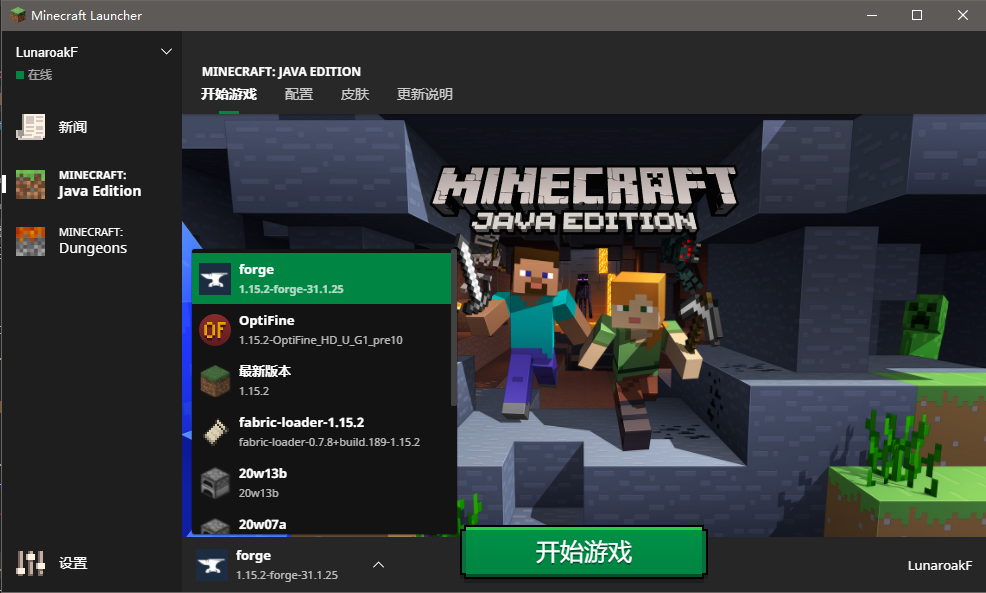

我的世界国际版交流
-分支界面-
模组安装-Forge
Minecraft Launcher
官方启动器
安装Forge
请确定您已经通过上一个教程安装了Java环境,否则你将无法启动Forge安装器
左侧选择版本，请从第二行的Install按钮下载对应版本Forge
若老是卡在广告界面 可以考虑右键install按钮复制连接地址后粘贴到浏览器地址栏将前面一部分删除
但不建议这样做，不想让Forge不更新就看一下广告在这样跳过广告下载
打开下载下来的文件，按确定开始下载安装
若安装超过5分钟还没有安装好建议科学上网或者移步HMCL
安装完毕后打开官方启动器然后选择Forge版本运行一次游戏

Hello Minecraft! Launcher
HMCL启动器
安装Forge
新建游戏版本

选择游戏版本
安装时选择安装Forge 选择第一个Forge版本
若没有版本可用则说明该版本无Forge支持 请更换游戏版本
建议使用1.7.10或1.12.2版本，这个版本Mod数量最多
请耐心等待
安装完成后记得运行一次游戏
安装Mods
确保已经运行过一次游戏，在游戏目录中找到Mods文件夹
将.jar的Mod文件复制到该文件夹，请确保Mod支持的游戏版本是否为你Forge安装对应的游戏版本

重新启动游戏(版本为Forge)，无报错则Mod正常被加载